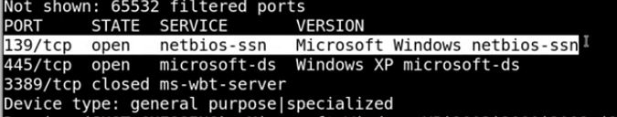

nmap gives the list of ports open for us
In nmap noramlly we just sscan for tcp side
bt in real life plpaces do also scan for udp by using -sU
bt for scanning all udp ports takes a hell lot of time
results:

Its written message signing disabled which is dangerous !!
even if u had got message signing as enabled that would have been equally dangerous
Nmap is letting you know that:
SMB signing is disabled;
This is the more dangerous — or less secure — option (as opposed to having SMB signing enabled);
This is the default setting for the system you are scanning.
Thus smb client did not work
instead of metasploit could also try with "enum4linux"
thus in host script results os that we get is now confirmed
Used msfconsole to attck smb coz smb is quite vulnerable(wannacry explout had happened)--first getting smb 's version
googled abt this version got this https://www.rapid7.com/db/modules/exploit/windows/smb/ms08_067_netapi
THus it worked and this was an example of reverseshell whihc is used quite often
Shell khula and we get the hgihest authprity here as we got authority system
Also meterpreter should match the architecture
when presed help got the ones above and u could do so many things
TO get the passwords :
THus using tools like john the ripper or hashcat other could crack out the passswords locally
Did this now copy contetnts of root.txt into flag and submit the flag
isntead of cat root.txt use type user.txt for windows cmd